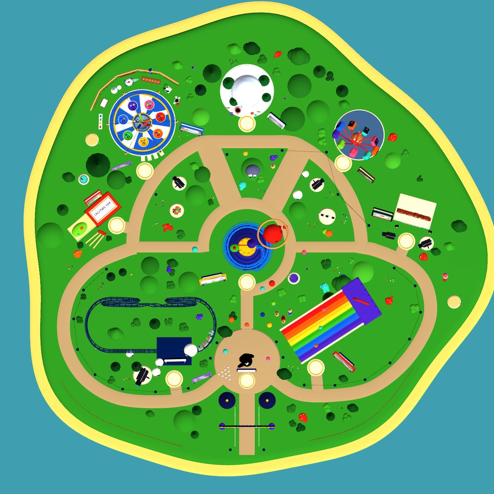

Every ride in the park is one of my projects.
I design original worlds, find ways to build them, and lead the teams that bring them to life. For over 20 years I've combined physical sets, puppets and handmade materials with CG and real-time production across games, TV and film.
I'm based in West Sussex, UK, and I'm always happy to talk about worlds, characters and the teams that build them.
